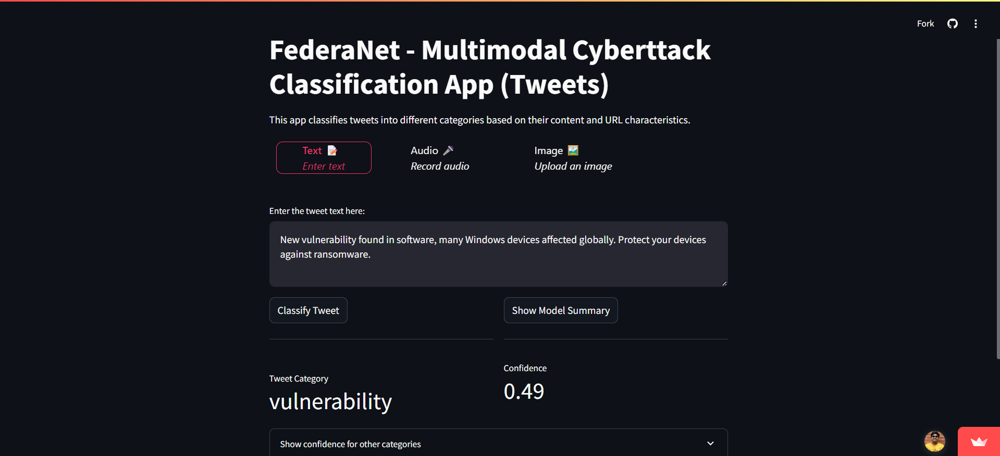
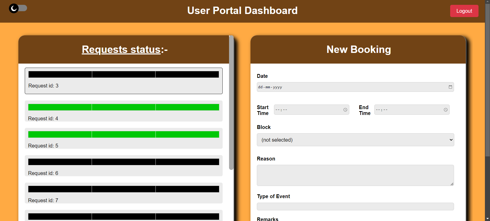
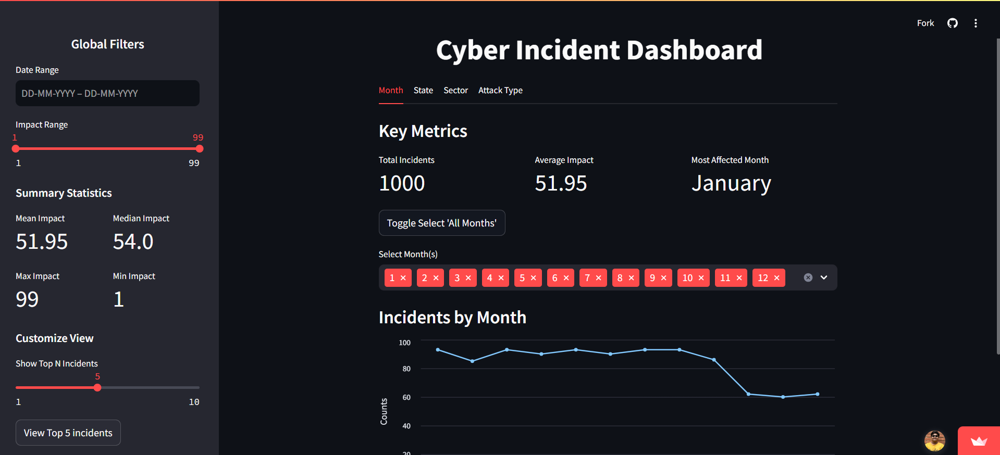

I am currently a 3rd Year student at MIT Manipal, deeply passionate about cybersecurity and coding. As a quick learner, I engage actively in local tech communities and often participate in AI/ML competitions, hackathons and Capture The Flag challenges. My technical interests span quantum computing and AI/ML, alongside a keen enthusiasm for anime and movies.
About Me
My Projects

FederaNet
A Multimodal Cyberattack classification model trained on social media messages, using deep learning for NLP tasks.
It is built as component of a federated framework utilizing a custom blockchain system complete with consensus & smart contracts, public key cryptography, zero-knowledge proofs and post-quantum key distribution.
cryptosystems
The cryptosystems package offers a robust suite of classes and functions for both symmetric and asymmetric encryption, as well as hashing functionalities.
All modules are implemented from scratch in Python and C (for speed in mathematical functions), utilising only the built-in libraries like ctypes and hashlib, resulting in a dependency-free package.

ClassRoom Allotment System
Project developed with the purpose of automation and streamlining the process of room reservation and allocation within academic institutions, made as part of project for the course Database Systems.
The backend is a Flask app, and utilises HTML, CSS and JS for frontend. SQLITE3 is used for database.

Cyber Incidents Dashboard
Cyber Incident Dashboard made for SIH 2024, as part of team Cryptonite.
- Problem Statement ID: 1667
- Problem Statement Title: Developing a tool to provide for real time feeds of cyber incident pertaining to Indian Cyber Space.
MetaDataScraper
MetaDataScraper is a Python package designed to automate the extraction of follower counts and post details from a public Facebook page. It uses Selenium WebDriver for web automation and scraping, without the requirement of an API key.
Two modes of operation: LoginLess for general purpose, and LoggedIn to access private pages.
‹
›
Skills
- Programming Languages: (C, Java, Python, Bash, JavaScript)
- Web Development: (HTML, CSS, React, NodeJS, Flask, Django)
- Databases: (SQLite3, Database Management)
- Security & Hacking: (Ethical Hacking, CTFs, Web Exploitation, Cryptography, PyCryptodome)
- Software Development: (Object-Oriented Programming, Data Structures and Algorithms, Berkeley Sockets API)
- AI/ML: (Artificial Intelligence, Machine Learning, Neural Networks, Natural Language Processing (NLP), Time Series Analysis, Demand Forecasting and Sales Prediction, scikit-learn, Keras, TensorFlow, NLTK)
- Computer Vision: (OpenCV, Pillow, scikit-image)
- Data Analysis & Visualization: (Numpy, Pandas, Matplotlib, Seaborn, Altair, NetworkX, Graphviz, Statsmodels, Power BI, Streamlit)
- Quantum Computing: (Quantum cryptography, Qiskit)
- Cloud & DevOps: (Azure DevOps, Docker, Git, GitHub)
- Testing & Automation: (requests, Selenium, BeautifulSoup, PyTest)
- Other Tools & Libraries: (Sphinx, Owlready2)
Education
Schooling
AISSE (Class 10) - CBSE: 96.8%
AISSCE (Class 12) - CBSE: 94%
B.Tech in Information Technology
- Pursuing Minor B.Tech in Computational Intelligence
- Pursuing Honours in AI/ML
Manipal Institute of Technology - CGPA: 8.54
Experience
Core Team Member at Cryptonite
Duration: December 2022 - Present
Core Team Member at ACM Manipal Chapter
Duration: June 2023 - Present
ML Intern at Brainvire Infotech
Duration: May 2024 - July 2024